Interactive Reference & Practice Tool
Let it stand (ignore deletion mark)
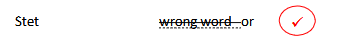
Continue text without starting a new line
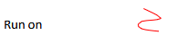
Change letter to lowercase (l.c.)
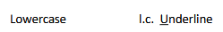
Change letter to uppercase / capital (u.c.)
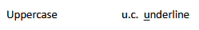
Start a new paragraph here (NP, * or //)
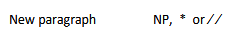
Indent line or paragraph
Align text vertically
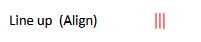
Shift text position towards left margin
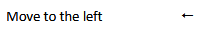
Move text position downwards on page
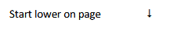
Shift text position higher up
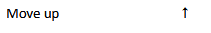
Insert character, word, or punctuation
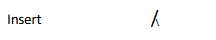
Remove text or character
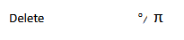
Swap positions of letters or words
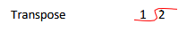
Capitalize initial letter of each word
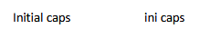
ALL CAPS without extra spacing between letters
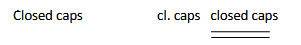
A L L C A P S with spaces between letters
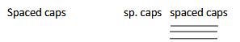
Close up space between letters/words
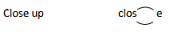
Insert a space character (#)
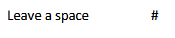
Move section in balloon to indicated position
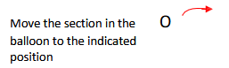
What is the correct way to format this manuscript text in the final document?